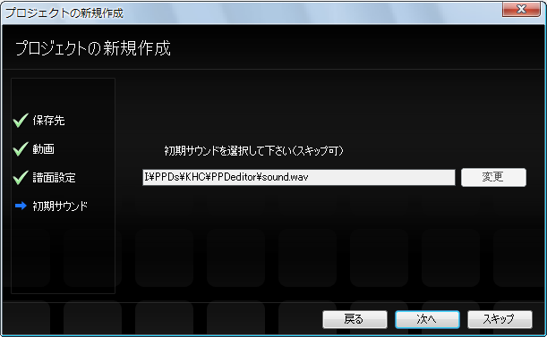
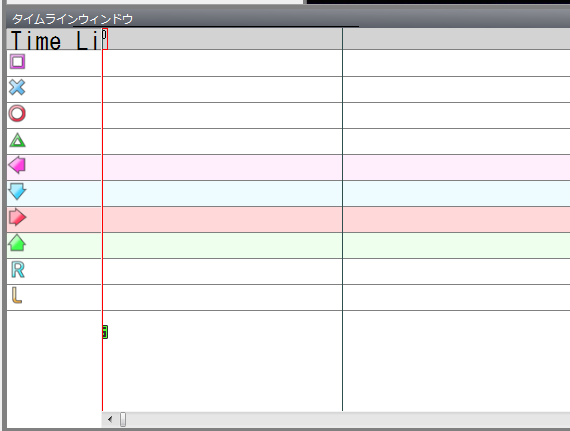

首先，准备好要使用的视频。（这里假设文件名为movie.mp4）
启动PPDEditor，选择 文件→打开→新建工程。

随后会显示新建工程对话框，按照对话框进行设置。
首先，选择工程的保存位置。通常保持默认即可，直接点击下一步按钮。

接下来，选择要使用的视频。
点击更改按钮会显示对话框，移动到保存movie.mp4的文件夹，选择movie.mp4后点击确定。


接下来，设置谱面的名称和配置。
谱面名称请输入曲名（如果有更容易理解的名称也可以加上）。
谱面配置中，如果想做成AC风格请选择AC（不知道AC是什么的话选择Normal即可）。
（※创建工程后也可以更改）

接下来设置初始音效。
通常使用默认显示的音效（铃鼓的声音）即可。
（※创建工程后也可以更改）

点击完成按钮。

试着播放、暂停视频吧。
首先，让时间轴（或游戏窗口）获得焦点（变成灰色即表示已获得焦点）。

在时间轴（或游戏窗口）获得焦点的状态下按空格键，
即可在播放和暂停之间切换。
另外，也可以从菜单栏进行播放、暂停和停止。

接下来，进行谱面的初始设置。
下一步